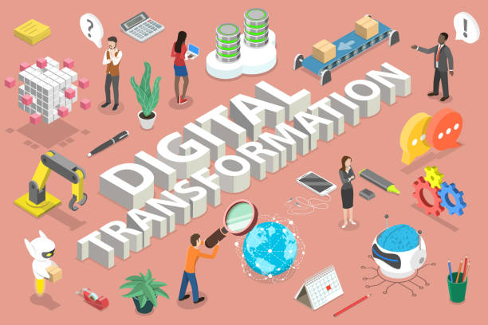
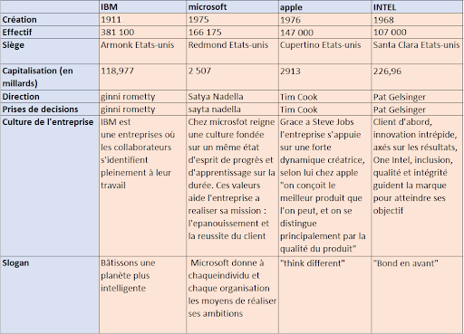
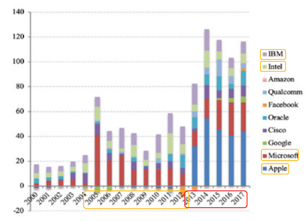

La transformation numérique ou digitalisation des entreprises
La transformation digitale, la digitalisation ou encore la e-digitalisation consiste à remplacer les processus manuels par des alternatives numériques, ce n’est pas un concept récent car il existe depuis l’invention d’internet, elle touche non seulement les technologies en constante évolution mais également tous les aspects d’une entreprise. La e-transformation au sein d’une entreprise est une étape clé et d’une grande envergure, c’est en quelque sorte un moyen de survie facteur d’amélioration soit un véritable moteur de performances économiques. Lorsqu’une entreprise décide de s’engager dans une transformation de ce type, le passage à ces nouvelles technologies à un impact sur les services ou produits, ses chaînes logistiques, son marketing ses partenaires sur le marché… Elle peut se caractériser par exemple par l’utilisation d’intelligence artificielle. Apple, Intel, Microsoft et IBM sont toutes des entreprises très développées et en avance technologiquement et donc on peut les qualifier d’entreprise digitalisée.
|  |
Les 7 étapes pour amorcer sa transformation digitale : vision digitale, formation, restructuration, travail collaboratif, focus sur le client, analyse de données, émergence des besoins |
|---|
- Établir un vison digital au sein de l’entreprise, pour saisir rapidement les enjeux
- Formez ces collaborateurs, pour comprendre le digital, ses enjeux et prendre en main les différents outils.
- restructuration/réorganisation de la hiérarchie du cadre de travail…
- travaillez avec des collaborateurs sur les projets.
- mettre le client au cœur de la stratégie, en lui proposant des nouvelles offres pour être au plus proche de celui-ci
- analysez les données, faites appel à un data-sicentist pour faire ressortir les besoins client
- restez à l’affût des émergences des besoins et collecter les nouvelles données nécessaire à l'avancement. Envisager de nouveaux processus et avancer.
Le marketing digital est l’un des piliers principaux de la transformation digitale qui s'appuie sur des canaux numériques afin de se rapprocher des clients et de leur proposer des produits ou services. Quand on parle au marketing digital on pense souvent aux réseaux sociaux et aux « social selling » mais il y a aussi les sites internet, les site mobiles et une multitude d’autres applications. Elles utilisent aussi l’emailing, le référencement naturel SEO, les liens commerciaux, la publicité en ligne ou display, l’affiliation, le content marketing, le marketing social, le marketing mobile, le marketing via les réseaux sociaux, le sms marketing. Tous ces outils permettent au mieux de répondre au besoin client.
Le cloud et l’ECM sont d’une importance fatidique au sein d'une entreprise ils permettent de gérer des contenus tels que des document, des données… Elle comprend les phases de création/capture, stockage, indexation, gestion, nettoyage, distribution, publication, recherche et archivage.
L’agilité : le prisme de tous les tendances managements
Au sein d’une entreprise, l’agilité est la capacité à s’adapter rapidement et efficacement à toutes les évolutions et tous les changements dans un but d’amélioration. Microsoft a été la première entreprise à s’autoproclamer « agile ». IBM et Google ont suivi rapidement.
Les autres nouvelles formes de management des entreprises du marché : la transformation numérique est synonyme d’une nouvelle façon de travailler. C’est la fin de la culture du silo au profit de l’open innovation, l’intelligence collaborative et l’agilité.
- Le management démocratique consiste à prendre des décisions avec le plus de collaborateurs possibles, le manager ne prend donc plus ces décisions seul.
- Au sein des entreprises la mise en place d’un leadership serviteur favorise l’autonomie ce dernier prend ses décisions. Le leader-serviteur a une grande conscience de soi, ce qui lui permet de comprendre les aspects reliés à l'éthique et aux valeurs.
- Une autre nouvelle forme de management est l’utilisation des AFEST ( Action de Formation en Situation de Travail) qui consiste à former les collaborateurs d’une entreprise face aux évolutions technologiques et/ou organisationnelles et ainsi améliorer leur compétence au sein de l’entreprise.
- L’entreprise étendue pour bénéficier d’experts multiples
De plus en plus, les entreprises vont chercher de nouvelles compétences à l’extérieur et ainsi de nombreux collaborateurs extérieurs participent au projet dans le but d’aller plus vite.
- Une des pratiques collaboratives accélérant l’innovation est le travail en réseau possible grâce à diverses applications.
- La gestion du temps est indispensable, nous sommes interrompus en permanence par le flux d’informations continu qui nous parvient. La gestion du temps est une compétence qui doit être mise en place pour gagner en efficacité.
|  |  |
|---|